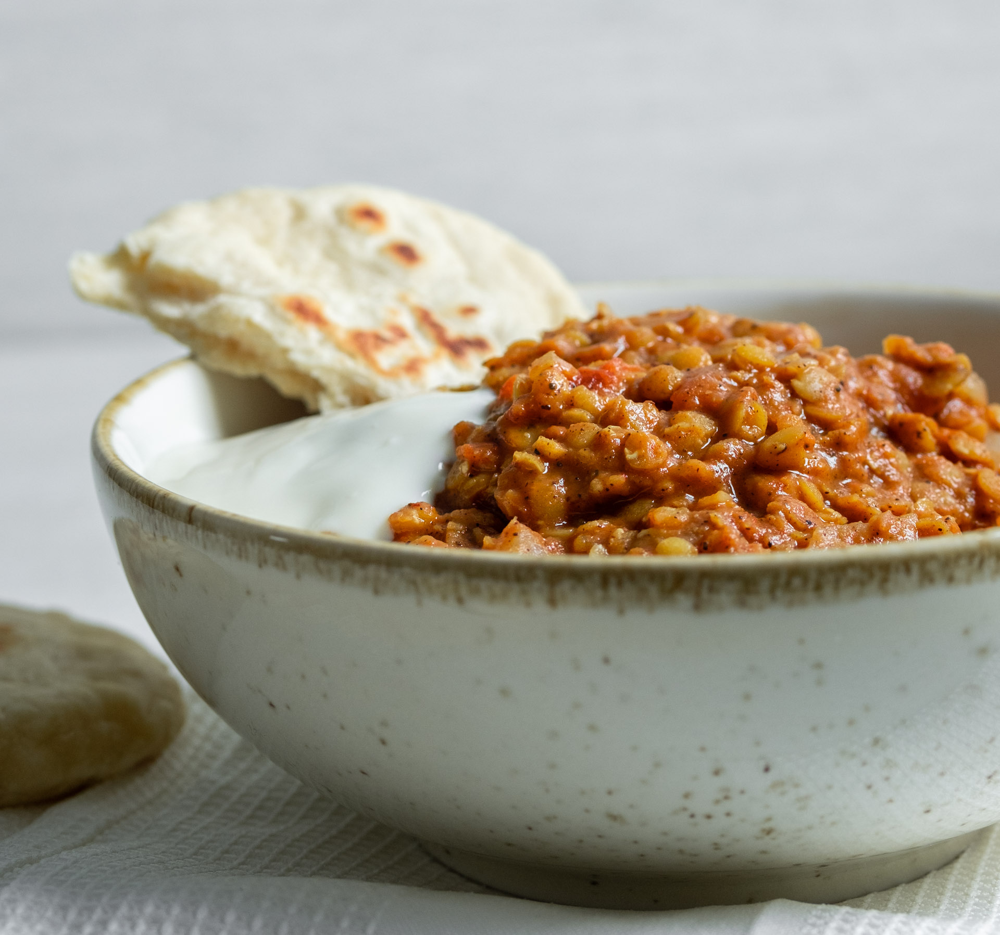

Lentil Soup with Rice

Description
Do you want to cook something fast and cheap tonight?
Then lentil soup with rice is the perfect choice!
You will need:
- 2 x 500g red lenses
- 6 carrots
- 4 cloves of garlic
- 1 leek
- 4 tablespoons tomato puree
- 2 x 500g cans crushed tomatoes
- 2 packets of coconut milk
- 2 tablespoons garam masala
- 6 dl water
- Limejuice
- Rice
- Naan bread
Steps
- Chop up the carrot, garlic and leek
- Fry in oil around 2 minutes
- Add garam masala, tomato puree and the cans of crushed tomatoes
- Wash the red lenses and add with the water
- Let it cook up and boil on medium heat for 15-20 minutes
- Meanwhile boil the rice
- Add the coconut milk, and warm the naan breads
- Add salt and some limejuice. Enjoy with the naan bread!